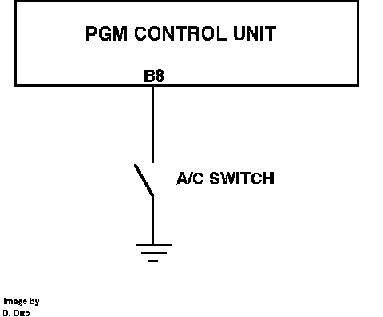

A/C Signal: Description and Operation
Air Conditioning Signal:

The air conditioning signal is used to inform the ECU that a request for air conditioning has been made. When the A/C switch is closed, pin A26 of the ECU is grounded, informing the ECU that the air conditioning has been turned on. The ECU then controls the compressor relay and adjusts idle speed to compensate for compressor load.